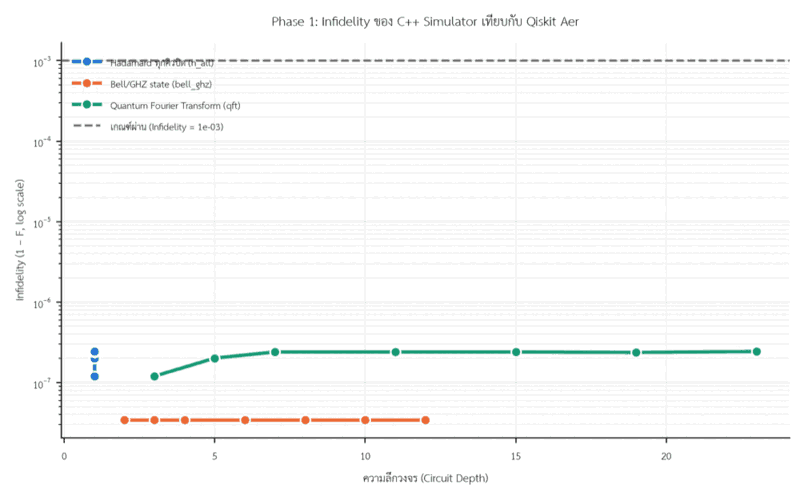

บทนำ (ที่มาและความสำคัญ)
ระบบ IoT กำลังเปลี่ยนจากการพึ่งพาคลาวด์ไปสู่การประมวลผลที่ขอบข่าย (Edge Computing)
เพื่อลด Latency แต่ไมโครคอนโทรลเลอร์แต่ละสถาปัตยกรรมมีข้อจำกัดด้านหน่วยความจำต่างกัน
การจำลองวงจรควอนตัมซึ่งต้องการหน่วยความจำเพิ่มแบบเอ็กซ์โพเนนเชียล (2n ตาม
จำนวน Qubit) จึงเหมาะเป็นภาระงานตัวแทนสำหรับศึกษาขีดจำกัดฮาร์ดแวร์ขอบข่าย งานวิจัยนี้
พัฒนา C++ Quantum Circuit Micro-Simulator ขึ้นเอง แล้วนำไปทดสอบบนไมโครคอนโทรลเลอร์
3 สถาปัตยกรรมที่ต่างกัน เพื่อสร้างกรอบการตัดสินใจว่าควรประมวลผลภายในเครื่อง (Local)
หรือส่งไปประมวลผลภายนอก (Offload) เมื่อใด
วัตถุประสงค์
- ออกแบบและพัฒนา C++ Quantum Circuit Micro-Simulator ที่ปรับให้เหมาะกับข้อจำกัด SRAM
ของ MCU พร้อมตรวจสอบความถูกต้องเทียบกับ Qiskit Aer ด้วย Infidelity (1−F) และ Total
Variation Distance (TVD)
- ศึกษา Memory Wall เปรียบเทียบ Execution Latency ระหว่าง Local กับ Offload และหา
Crossover Point ที่การ Offload คุ้มค่ากว่า พร้อมวิเคราะห์ผลของสถาปัตยกรรมที่มีและไม่มี FPU
- สังเคราะห์ผลทั้งหมดเป็น Decision Framework รูปแบบ Flowchart และสมการ สำหรับวิศวกร
เลือกวิธีประมวลผลบนระบบ Edge Computing
สมมติฐาน
- Arduino Uno R3 (8-bit) จะถึง Memory Wall ที่จำนวน Qubit น้อยกว่า MCU 32-bit และต่ำกว่า
ค่าทางทฤษฎี (2n×8 Bytes) เนื่องจาก SRAM ต้องแบ่งให้ Stack และตัวแปรอื่นด้วย
- เนื่องจาก Uno ไม่มี FPU Crossover Point จะเกิดขึ้นเร็วในช่วง Qubit ที่บอร์ดยังรันได้
ตรงข้ามกับ ESP32 ที่มี FPU และ Clock สูงกว่า ซึ่ง Crossover Point จะเลื่อนออกไปใกล้ Memory Wall
- วงจร QFT ซึ่งมีจำนวนเกทมากกว่าวงจรพื้นฐาน (Hadamard, Bell/GHZ) จะคุ้มค่ากับการ Offload
เร็วที่สุดในทุกบอร์ด
ตัวแปร
ตัวแปรต้น
สถาปัตยกรรม MCU (Uno / ESP8266 / ESP32), จำนวน Qubit, รูปแบบ
การประมวลผล (Local / Offload)
ตัวแปรตาม
Execution Time และ End-to-End Latency (µs), Free Heap, ค่า
Infidelity (1−F) และ TVD
ตัวแปรควบคุม
ชนิดวงจร (Hadamard ทุกคิวบิต, Bell/GHZ state, QFT), Baud Rate
สูงสุดที่เสถียรของแต่ละบอร์ด, Compiler Optimization และเวอร์ชันเครื่องมือ
วิธีทำการทดลอง
Phase 1 — System Validation
เทียบ State Vector จาก C++ Simulator กับ Qiskit Aer ด้วยลำดับเกท
เดียวกันทุกประการ วัด Infidelity (1−F) และ TVD ที่ n = 2, 3, 4, 6, 8, 10, 12 เกณฑ์ผ่าน
Infidelity ≤ 10⁻³
Phase 2 — Edge Benchmark
อัปโหลดและรันบน MCU ทั้ง 3 บอร์ด เพิ่มจำนวน Qubit ทีละ 1 จนถึง
Memory Wall บันทึก Execution Time ด้วย Logic Analyzer 24 MHz และ Free Heap ซ้ำอย่างน้อย
30 รอบต่อจุดข้อมูล รายงานผลเป็น Median ± IQR
Phase 3 — Offload Benchmark
ส่งคำขอผ่านโปรโตคอลเฟรม Serial USB ให้ PC จำลองวงจรด้วย Qiskit Aer
สดใหม่ทุกครั้งแล้วส่งผลกลับ วัด End-to-End Latency ซ้ำ 30 รอบต่อจุดข้อมูล ที่ Baud Rate
สูงสุดที่ระบบยังทำงานได้เสถียร
Phase 4 — Decision Framework
สังเคราะห์ผลจาก Phase 2–3 เป็น Flowchart 2 ขั้นตอน (ตรวจ Memory
Wall ก่อน แล้วเทียบ Crossover Point) พร้อมสมการทำนายสำหรับบอร์ดที่ยังไม่ได้ทดสอบ
ฮาร์ดแวร์: Arduino Uno R3, ESP8266 V2, ESP32 DevKit V1, Logic Analyzer 24 MHz 8CH,
MacBook Pro M1 • ซอฟต์แวร์: PlatformIO, Qiskit Aer, PySerial, NumPy,
Matplotlib
ผลการทดลอง — Phase 1
| วงจร | Infidelity (1−F) สูงสุด | TVD สูงสุด | ผลตรวจ (7 ค่า n) |
|---|
| h_all | 2.43 × 10⁻⁷ | 1.22 × 10⁻⁷ | ผ่านทุกกรณี |
| bell_ghz | 3.45 × 10⁻⁸ | 1.72 × 10⁻⁸ | ผ่านทุกกรณี |
| qft | 2.43 × 10⁻⁷ | 1.22 × 10⁻⁷ | ผ่านทุกกรณี |

ภาพที่ 1 Infidelity เทียบกับ Circuit Depth (log scale, 21
กรณีทดสอบ ครบ 3 วงจร × 7 ค่า n) — ค่าคลาดเคลื่อนอยู่ระดับ 10⁻⁷ ถึง 10⁻⁸ ต่ำกว่าเกณฑ์ผ่าน
(10⁻³) มากกว่า 4 อันดับ (order of magnitude) ยืนยันว่า C++ Simulator ที่พัฒนาขึ้นให้ผล
ตรงกับ Qiskit Aer